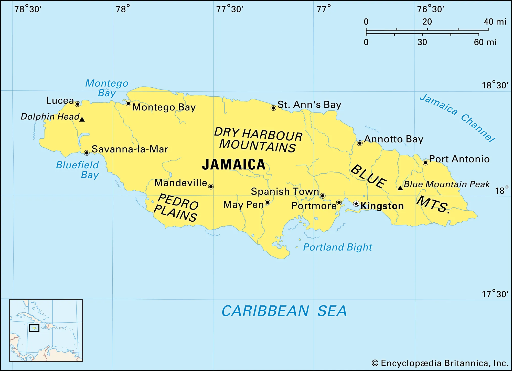

COME BACK TO THE VIBE THAT COMES ALIVE IN JAMAICA!
Welcome to Jamaica, where the vibrant energy and laid-back charm of our island will captivate you. Come explore the rhythmic pulse of our island and the irresistible vibes, warmth and spirit of our people that will leave an indelible mark on your heart.
Whether you're seeking adventure, relaxation, a romantic escape, vibrant cultural encounters or breathtaking natural wonders, Jamaica has something for everyone. This is your invitation to experience the magic of Jamaica and come back to being your best self again.
Jamaica, a Caribbean island nation, has a lush topography of mountains, rainforests and reef-lined beaches. Many of its all-inclusive resorts are clustered in Montego Bay, with its British-colonial architecture, and Negril, known for its diving and snorkeling sites. Jamaica is famed as the birthplace of reggae music, and its capital Kingston is home to the Bob Marley Museum, dedicated to the famous singer.
Geography
Jamaica is a mountainous island in the Caribbean Sea about 600 miles (965 kilometers) south of Miami, Florida. It is part of the chain of Caribbean islands called the Greater Antilles, along with Cuba, Hispaniola, and Puerto Rico. Jamaica was formed when the North American and Caribbean tectonic plates collided about 25 million years ago. Jamaica is the tip of a mountain rising from the sea floor. Nearly half of the island is more than 1,000 feet (330 meters) above sea level. There are lush rolling hills that are ideal for agriculture and coastal beach regions that are popular with tourists.
Things to do in Jamaica!
You will never run out of things to do in Jamaica
This island is bursting with stories and experiences served with the warmest hospitality and largesse. There’s always music playing, delicious food cooking, and you’re always invited. From hiking and water sports to historical sites and food tours, Jamaica is a treasure trove of activities waiting to be checked off your bucket list. Think golfing, shopping, sailing, exploring and not to mention the parties!... Even we can’t keep up.
Come back to exciting and dive into the wide range of things to do in Jamaica.